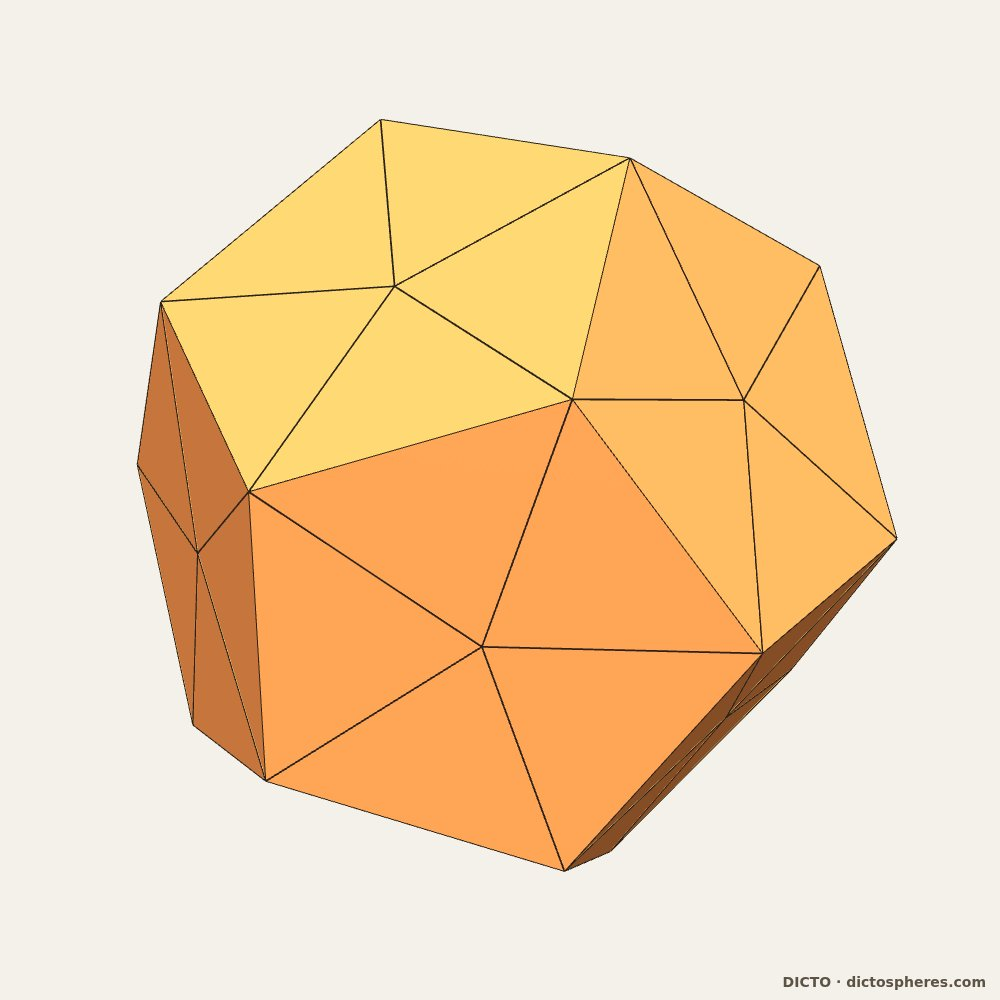
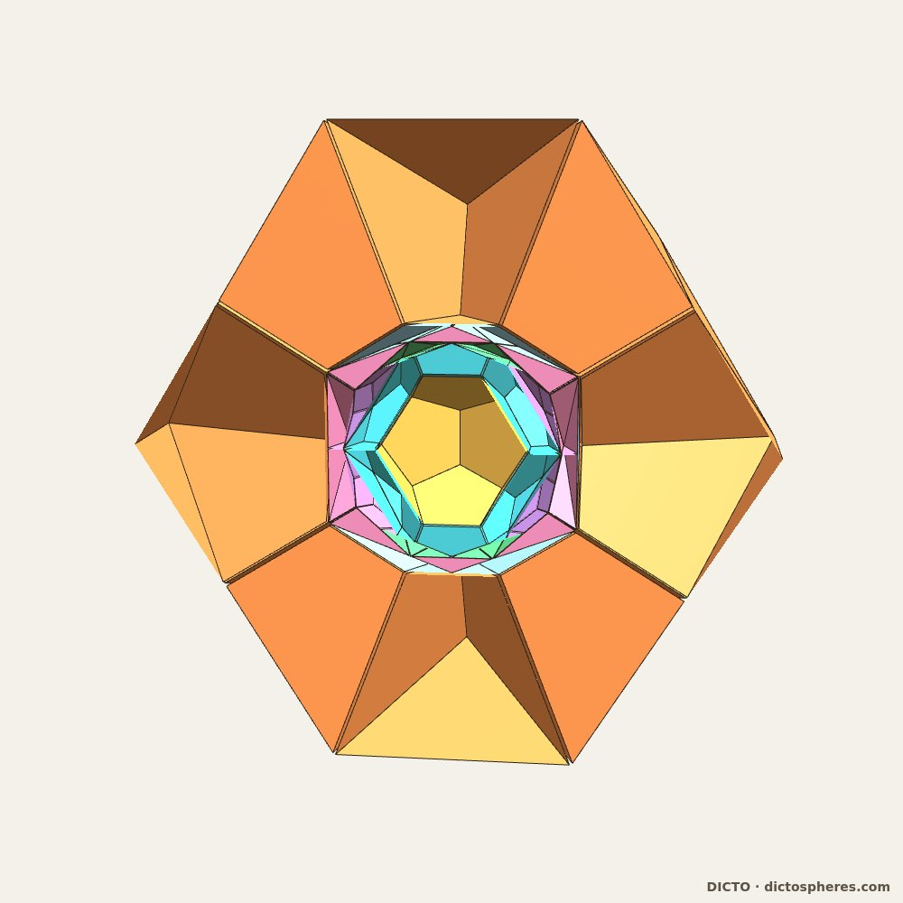
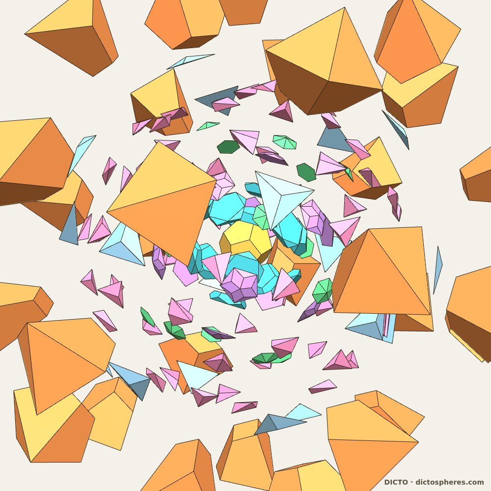
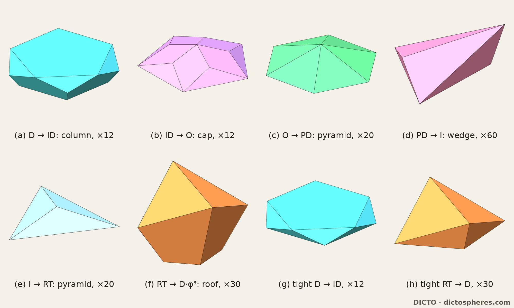
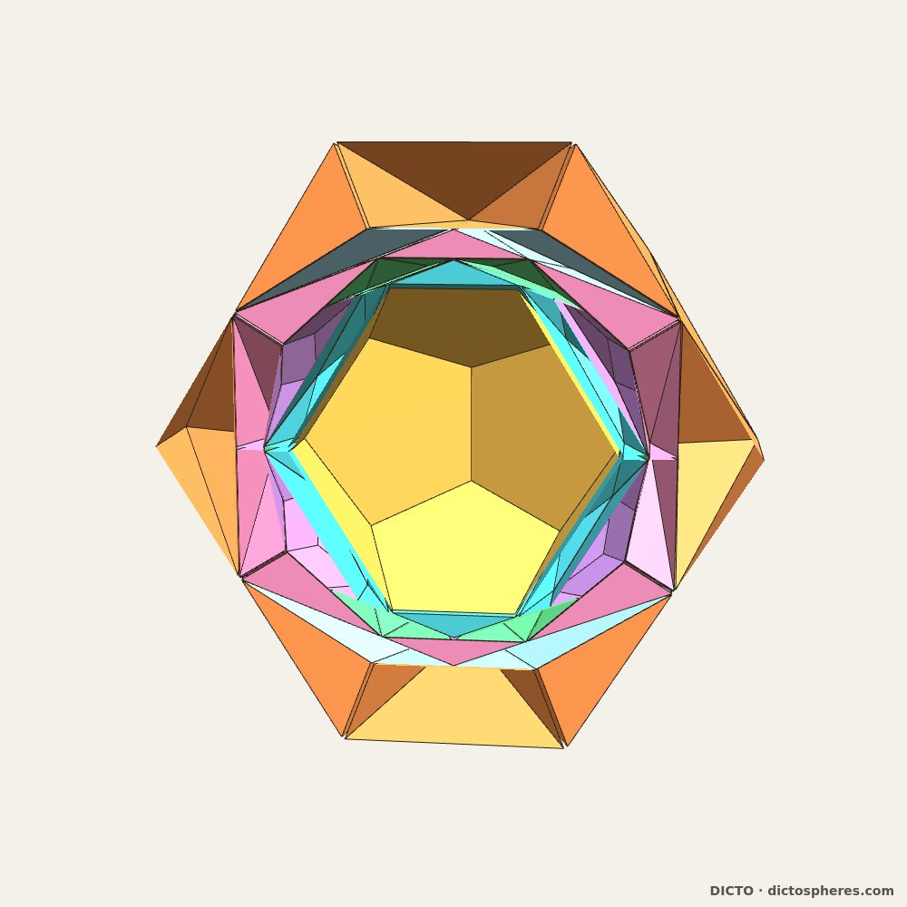
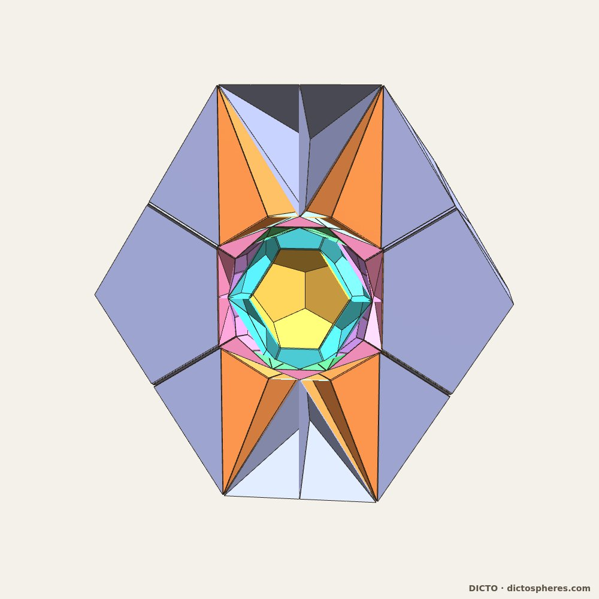
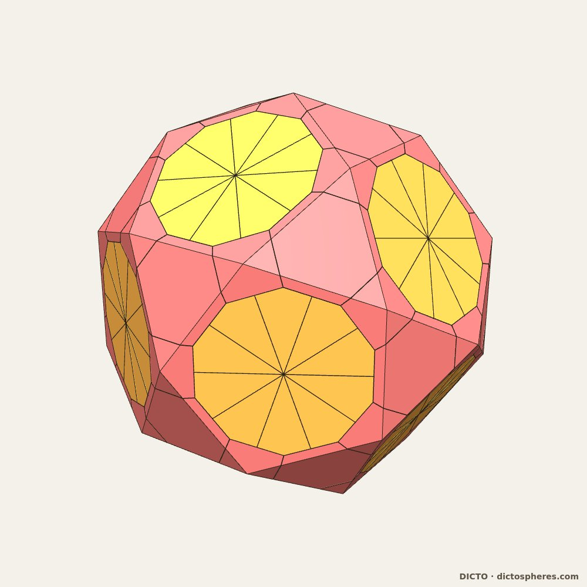

Polar reciprocation reverses the Spheres of Dharma into a new exact φ³ cycle of nested icosahedral shells: one kind of piece per layer, an evenly stepped nest, the great stellated dodecahedron locked in the outer gap, a dual pair in the inner gap, the golden frame, the cycle repeating inward to its core, and the checks that keep each step exact
The Spheres of Dharma (DICTO DOI: 10.5281/zenodo.23310833) is an exact, endlessly repeating nesting of six icosahedral solids, the Ritsudō cycle: icosahedron ⊂ icosidodecahedron ⊂ dodecahedron ⊂ truncated icosahedron ⊂ rhombic triacontahedron ⊂ icosahedron φ³ larger, each layer filled by a few repeated pieces. In its truncated icosahedron → triacontahedron layer the hexagonal caps close part-way into a convex solid, the DICTO Truncated-Icosahedral Hecatodihedron (DICTO DOI: 10.5281/zenodo.23360858): the truncated icosahedron with a Shield on each hexagon, 102 faces (12 pentagons, 30 rhombi, 60 triangles) and 80 corners. It is the seventh stage of the cycle when each closed stage is taken as one solid (Capturing the In-betweens, DICTO DOI: 10.5281/zenodo.23345502). Here we take the six solids and the Hecatodihedron stage as seven stations.
First attempt: flip the pieces. DICTO's question (13 October 2026) was what happens to the cycle turned inside out. The direct way is to turn every piece of every layer (skin) over, as a physical half-turn about a line through the point on the piece's own axis midway between its two solids; every Dharma piece has a mirror plane through its axis, so this is the same as reflecting it in the midway plane. No skin closes into a shell (Table 1, float). Skins of a few large pyramids drift apart, their points now turned inward; the closed skins crowd, about a third of the midway surface covered twice. In every skin the flipped pieces rest on the inner solid and never cut into it. Dharma's pieces are shaped for their direction, so turning the cycle inside out needs new pieces.
| Skin | Pieces | Midway surface covered | Covered twice | Deepest overlap |
|---|---|---|---|---|
| icosahedron → icosidodecahedron | 32 | 100% | 35.1% | 0.369 |
| icosidodecahedron → dodecahedron | 20 | 3.1% | 0 | none (pieces apart) |
| dodecahedron → truncated icosahedron | 42 | 67.1% | 4.4% | 0.163 |
| truncated icosahedron → Hecatodihedron | 20 | 7.7% | 0 | none |
| Hecatodihedron → triacontahedron | 72 | 17.8% | 0.1% | 0.070 |
| triacontahedron → icosahedron φ³ | 50 | 100% | 36.4% | 0.309 |
Table 1. The flip test (float; cover of the midway surface, halfway between the two solids along each direction, sampled at 4000 directions; deepest overlap between neighbouring flipped pieces, in the units of the Dharma coordinates).
Second attempt: polar reciprocation. Polar reciprocation in a sphere about the common centre sends every plane to a point and every point to a plane; a solid goes to its dual, and inclusion reverses: if P ⊂ Q then Q* ⊂ P* (a classical fact of convex geometry; see e.g. Firsching 2015). So the reversed cycle is again a nest, read from the other end:
D ⊂ ID ⊂ Ogdoecontahedron ⊂ PD ⊂ I ⊂ RT ⊂ D·φ³
(dodecahedron, icosidodecahedron, the Hecatodihedron's dual, pentakis dodecahedron, icosahedron, rhombic triacontahedron, dodecahedron). We computed every pole exactly in ℚ(√5) from the snapped original corners. The outer dodecahedron is exactly φ³ times the inner one, so the volume closes at 38 + 17√5 = φ⁹. Duality swaps solids in pairs, so the icosidodecahedron and the triacontahedron, and the icosahedron and the dodecahedron, appear in both cycles in swapped places; the truncated icosahedron becomes the pentakis dodecahedron, and the Hecatodihedron becomes something new.



The polar of the Hecatodihedron is a solid not found named in the sources we checked; exactly, it is the canonical pentakis dodecahedron with its 20 three-fold corners cut off at the truncated icosahedron's hexagon planes, an unnamed solid derived from a known one (the DICTO Hecatodihedron paper, Version 2 (DICTO DOI: 10.5281/zenodo.23360857); this sentence is corrected in Version 2). DICTO named it the Ogdoecontahedron for its 80 faces: 20 regular hexagons and 60 kites, with 102 corners and 180 edges. The solid itself, including how it sits between the icosidodecahedron and the pentakis dodecahedron, is described in The DICTO Ogdoecontahedron (DICTO DOI: 10.5281/zenodo.23404688).
We cut each layer A ⊂ B by the cones from the centre over the faces of the inner solid A: each piece is cone(F) ∩ B beyond F, convex by construction (the Kion construction of Theaetetus, DICTO DOI: 10.5281/zenodo.23378070). Faces of A that already lie on B's surface give no piece. Every corner was solved exactly as the meeting point of three exact planes, and every volume summed exactly against its layer.
| Layer | Pieces | Each piece | Exact volume |
|---|---|---|---|
| D → ID | 12 | a column on each dodecahedron face (two regular pentagons, 5 pentagonal and 5 triangular sides) | (−144185 + 64487√5)/243 |
| ID → Ogdoecontahedron | 12 | a cap on each icosidodecahedron pentagon (the icosidodecahedron's triangles lie in the hexagons and give no piece) | (−155 + 101√5)/4617 |
| Ogdoecontahedron → PD | 20 | a low pyramid on each regular hexagon (the kites lie in PD's faces) | (−22 + 10√5)/81 |
| PD → I | 60 | an irregular wedge, 5 corners and 6 triangles | (−6560 + 2936√5)/513 |
| I → RT | 20 | a triangular pyramid on each icosahedron face | (−796 + 356√5)/3 |
| RT → D·φ³ | 30 | a roof on each rhombus, its ridge a dodecahedron edge | 200 − 1336√5/15 |
In every layer, the sum of the pieces minus the layer volume is exactly 0.

The faithful copy keeps the original closure (outer dodecahedron = inner × φ³), and that leaves two stations floating: the triacontahedron could grow ×1.894 (float) before touching the outer dodecahedron, and the inner dodecahedron ×1.232 before touching the icosidodecahedron. The four middle stations touch. DICTO asked for a more even nest. Tightening both ends, the inner dodecahedron grows by exactly 11/18 + 5√5/18 until its corners touch the icosidodecahedron's triangles, and the outer one shrinks by exactly 5 − 2√5 until the triacontahedron's twelve tips touch its face centres. The inradii then step evenly (0.495, 0.567, 0.623, 0.653, 0.714, 0.764, 0.898), the outer layer falls from 25.2 to 1.9, and every layer is still one kind of piece, exact with remainder 0: the inner layer becomes 12 near-antiprism columns, (−35/729 + 71√5/2187) each, and the outer 30 wedges on the rhombi, (−7352/3 + 1096√5) each. The price is the golden closure: the tight cycle repeats at linear ratio 1.8146 (squared 49815/2 − 22275√5/2), not a power of φ. We keep both versions.

DICTO asked whether a Kepler–Poinsot solid could sit in the faithful nest's large outer gap. We treated each star as a filled body (points of nonzero winding number; the densities at the centre come out 3, 3, 7, 7 as they should) and found the range of sizes that keeps the triacontahedron inside the star and the star inside the outer dodecahedron. The great icosahedron does not fit. The great dodecahedron and the small stellated dodecahedron fit, but float between two sizes. The great stellated dodecahedron fits at exactly one size: its 20 points are the outer dodecahedron's 20 corners, and its 12 valleys, where five spikes meet, are the chain's icosahedron corners, which are also the triacontahedron's five-fold tips. We checked this exactly: each of the 12 icosahedron corners lies on five of the star's face planes.
The star is the chain's icosahedron with a spike on each face (Kepler; our In-betweens paper, DICTO DOI: 10.5281/zenodo.23345502), and its volume is exactly 3 icosahedra, as follows from the standard formulas. Its surface is 60 triangles, each seen once from the centre, and the cones over them cut the gap into two exact layers: inside the star, around the triacontahedron, 60 congruent tetrahedra (point, triacontahedron corner and two valleys), (188/3 − 28√5) each; outside it, up to the dodecahedron, 60 congruent pentagonal pyramids, (112/3 − 248√5/15) each. Both sum to their layers with remainder 0.
Why it fits: the squared ratio of the star's point radius to its valley radius is exactly 3φ³/√5, a fixed property of the great stellated dodecahedron, and the chain's outer dodecahedron and its icosahedron stand in exactly this ratio.



In the inner gap, between the dodecahedron and the icosidodecahedron, none of the four stars fits. The Hecatodihedron itself fits but floats: its size can vary ×1.232, touching 20 points at either end and never both. DICTO then asked for a dual pair instead. A pair X, Y locks when three contacts hold at once (dodecahedron on X, X on Y, Y on the icosidodecahedron). No icosahedral Archimedean–Catalan pair locks (the five non-chiral pairs were tested; the chiral snub dodecahedron pair was not). The truncated icosidodecahedron does not fit inside its dual; as DICTO pointed out, in the reversed cycle the pair must go in reverse order too, and so it does: the disdyakis triacontahedron inside the truncated icosidodecahedron. Exactly: the disdyakis triacontahedron (the truncated icosidodecahedron from the even permutations of (±1/φ, ±1/φ, ±(3+φ)), (±2/φ, ±φ, ±(1+2φ)), (±1/φ, ±φ², ±(3φ−1)), (±(2φ−1), ±2, ±(2+φ)), (±φ, ±3, ±2φ), in the chain's golden frame, and the disdyakis triacontahedron as its polar in the unit sphere) is scaled by 9 − 3√5 = 6/φ², the truncated icosidodecahedron by 2/15, and the play between them is 5/9 + 2√5/9 = √5·φ³/9 ≈ 1.0525. The truncated icosidodecahedron's 12 decagons lie exactly in the icosidodecahedron's pentagons. The layers cut into 12 pieces of one kind, 120 of one kind and 50 caps of two kinds, all exact with remainder 0. The nearest pair to a lock is the rhombicosidodecahedron inside the deltoidal hexecontahedron, play exactly 62/123 + 137√5/615 ≈ 1.00218: short of locking by 0.2%.



DICTO asked whether golden rectangles would frame the whole. The 15 golden rectangles of an icosahedron (five perpendicular triples) clear the whole nest when the icosahedron is the next turn of the cycle, the chain's icosahedron × φ³ (the smallest icosahedron around the dodecahedron is not enough). Then each of the outer dodecahedron's 30 edges lies along one of the rectangles' 30 long edges, centred, and the long edge is φ³ times as long (corner radius² 10 + 2√5, midpoint radius² 4). This is classical: the 30 long edges are the edges of the outer dodecahedron's small stellated dodecahedron, made by extending its edges (Kepler 1619), a pentagram chord being 1 + 2φ = φ³ times the pentagon side. The long edges of the frame that holds the cycle are the edges of its outer dodecahedron's own first stellation.

What fills the inner dodecahedron? The cycle itself. Its outer dodecahedron is exactly φ³ times its inner one, so the whole nest scaled by 1/φ³ fills the inner dodecahedron with no gap. Inside that sits the next turn, and so on to the centre. In the faithful version every turn brings back the large gap, so the great stellated dodecahedron locks in the outer gap of every turn: its points on that turn's dodecahedron corners and its valleys holding the next triacontahedron. The golden frame of Section 7 is the next turn outward, and the core is the next turn inward.


The original and reversed cycles can also share one space; that is the subject of a further paper (in preparation).
Three of our first tables in this study were wrong, and each was caught before publication. Standard coordinate lists for the Archimedean solids come in two mirror golden frames, and most of ours were in the wrong one, so they did not share the chain's axes. A slack formula was inverted. A float face count reported 103 kinds of piece in a layer of 120 congruent pieces. DICTO asked for rules that would prevent this, and we collected the checks in a shared module (studies/_lib/geomcheck.py) that stops with an error instead of printing a wrong table. The cone-cut script uses it directly. All the study scripts were rerun from scratch before publication, and their outputs were compared with the committed data:
The module's tests replay each of our slips and show the check catching it.
Known and credited: polar reciprocation and the reversal of inclusion (convex geometry; Firsching 2015); the largest copy of one polytope in another (Croft 1980; Firsching 2015 computes it exactly; our fits are the concentric, same-orientation case); nested icosahedral shells in clusters, viruses and fullerenes (Takakura et al. 2007, the Tsai cluster of the Spheres of Dharma; Twarock, Valiunas and Zappa 2015; Dechant et al. 2014); the Kepler–Poinsot solids, the great stellated dodecahedron as an icosahedron with twenty spikes and the small stellated dodecahedron as the dodecahedron's extended edges (Kepler 1619; Poinsot 1810); the 15 golden rectangles of the icosahedron. Hafner (2007) dissects the small and great stellated dodecahedra into the triacontahedron and hexecontahedron using 60 tetrahedra, each, as he describes, 1/6 of a prolate golden rhombohedron; our 60 tetrahedra between the triacontahedron and the star are different pieces: each has exactly φ² times the volume of his on the same triacontahedron edge (checked in ℚ(√5)).
Not found in our reference library and web searches (16 October 2026; printed catalogues not read): the reversed Spheres of Dharma as an exact nest with one piece kind per layer; the tight nest; the great stellated dodecahedron's lock in the reversed cycle, which follows directly from classical facts and is presented as an observation about this cycle, not a new theorem; the inner-gap dual pairs and their exact scales and play; the exact pieces and volumes.
In studies/2026-10-16-polar-dharma: polar.py (the reversed chain, exact poles, closure, touching), polar_pieces.py (the cone cut; kinds by symmetry orbit), polar_exact.py (exact corners and volumes; arguments tight, tid, rid), polar_tight.py, polar_stars.py and polar_gsd_exact.py, polar_gsd_pieces.py, polar_heca_gap.py, polar_round.py, polar_dual_pair.py, polar_pair.py, polar_golden_rect.py, hstar_render.py, polar_turns.py, polar_hafner_exact.py; the flip test is flip.py in studies/2026-10-16-flip-test; outputs in data/, renders by render_polar.html, render_hstar.html and the shoot_*.mjs scripts. Checks: python3 studies/_lib/test_geomcheck.py.